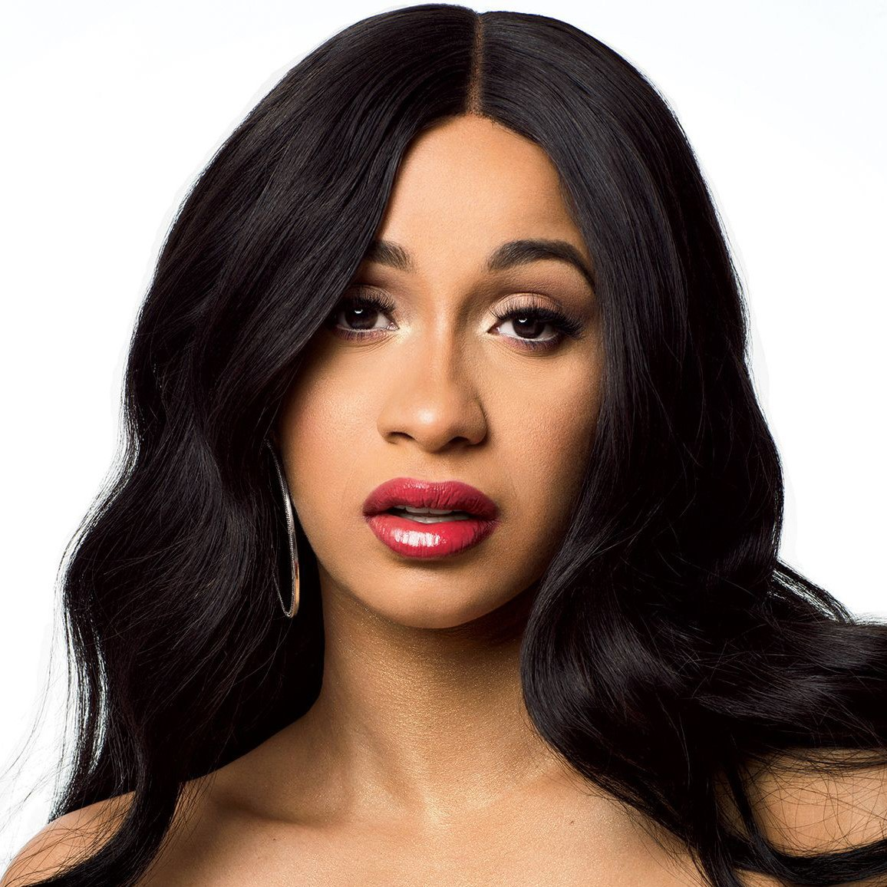

29,718,341 Monthly Listeners

Cardi B
About Artist
American rapper and entertainer Cardi B made her breakthrough debut in the late 2010s with a quick ascent to the top of the rap and pop charts. After an initial run of singles that made her the first female rapper in nearly two decades to top the Billboard Hot 100 with the hit "Bodak Yellow," she issued her Grammy-nominated, critically-acclaimed debut album, 2018's Invasion of Privacy, which reached number one and broke additional records with the summer smash, "I Like It."
Spitting raw and aggressive rhymes in the tradition of Lil' Kim, Nicki Minaj, and Foxy Brown, the former stripper and social media star born Belcalis Almanzar made her television debut in late 2015 on VH1's Love & Hip Hop: New York, joining a cast that also included fellow New York rapper Remy Ma. A year later, she made her musical debut alongside dancehall singer Popcaan on Shaggy's "Boom Boom" single. The solo single "Cheap Ass Weave" and the mixtape Gangsta Bitch Music, Vol. 1 soon followed in early 2016. Two more singles, "Foreva" and "Wash Poppin'," arrived that summer. A second mixtape, Gangsta Bitch Music, Vol. 2, was released in early 2017.
That same year, Cardi signed with Atlantic Records and scored a hit with the single "Bodak Yellow," which climbed to the top spot of the Billboard Hot 100 in late September; it made her the first solo female rapper to do so since 1998. Her chart run continued with features on G-Eazy's "No Limit" and Migos' "MotorSport," two additional Top Ten hits that crowned Cardi as the first female rapper to have her first three entries land in the Top Ten of the Hot 100 and Hot R&B/Hip-Hop Songs charts. After the release of her single "Bartier Cardi" with 21 Savage, Cardi hopped onto a remix of Bruno Mars' "Finesse." The new jack swing revival track soared to number three in the U.S. and topped charts across the globe. With these singles, Cardi became the first woman in history to have five simultaneous Top Ten singles on the R&B/Hip-Hop Songs chart.
Her official debut studio album, Invasion of Privacy, arrived in spring 2018. Including her two breakthrough singles, the effort also featured appearances by Migos ("Drip"), Chance the Rapper ("Best Life"), Kehlani ("Ring"), SZA ("I Do"), YG ("She Bad"), and Bad Bunny and J. Balvin on "I Like It." The latter track was issued as a single and made a steady climb to the top of the Hot 100 in July 2018, making Cardi the first female rapper to achieve two number ones. That summer, she also featured on hit singles with Jennifer Lopez ("Dinero") and Maroon 5 ("Girls Like You"). To cap her banner year, she was nominated for multiple Grammy Awards and Invasion of Privacy was included on numerous year-end critics' lists. ~ Neil Z. Yeung & David Jeffries, Rovi